Tennis Racket Sweet Spots¶
The Physics of Tennis Racket Sweet Spots — where to strike the ball for maximum power, control, and comfort. Science behind the sweet spot, frame stiffness, and string tension.
Source: "Tennis Racket Sweet Spots.docx" — composite archive: a coaching primer on racquet contact zones, an academic article by Fabio Bocchi, and a peer-reviewed review on modern rackets, balls, and surfaces.
What Part Of The Racquet Should Be Used To Strike The Ball?¶
Several games need a racquet for the play to be affected. This includes games like badminton, tennis, squash, and ping-pong. How you hit the ball and the specific location where you hit it will determine the ball’s strength and speed, ultimately determining the game. With that said, do you ever wonder what part of a racquet should be used to strike the ball? If you want to hit the ball with power, you should hit it towards the racquet’s throat.
The throat is the base part of the racquet; here, you will generate a lot of force to the ball. If you want your ball to have a high speed, hit it with the tip of the racquet. To achieve the highest speed, hit the ball with a part of a racquet that produces a combination of the highest speed and the highest power. The optimum speed and power are essential when playing any game that requires a racquet. As a player, you will have to find the right place on the racquet to hit the ball.
If you swing a racquet slowly and hit the ball close to the throat, the increased power will make up the loss of speed. Therefore, it will be ideal to hit your ball close to the throat of a racquet if you want it to move at high speed, even with a slow swing of the racquet. Swinging a racquet at high speed, on the other hand, will require you to hit the ball with the area close to the tip of the racquet. The tip has less strength as compared to the throat.
However, the loss of strength will be covered up with the high speed used to hit the ball, and you will still achieve the optimum speed on the ball. At any given contact position, a variety of power and racquet speed combinations are available. The maximum shot speed set on the racket will vary depending on the combination. These might range from the neck to the tip. Try different locations on the racquet with a tennis ball to see for yourself.
With all the said information, the part of the racquet where you should hit the ball will depend on the impact you want to have on it. When trying to hit the ball closer but with power, you should consider hitting it with the racquet’s throat. Otherwise, it would help if you hit it with the tip of the racquet for you to achieve the speed you want on the ball to send it to a distant location.
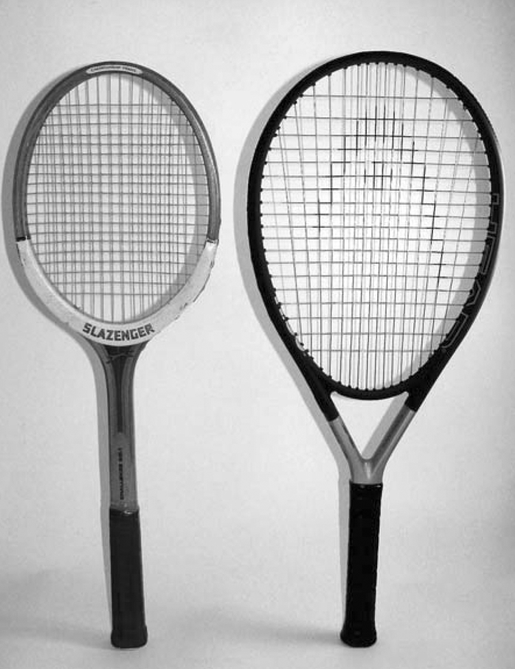
Difference Between Accuracy And Precision While Using a Racquet¶
At times, accuracy and precision may be misinterpreted. Precision measures the repeatability or reproducibility of the measurement. Accuracy, on the other hand, indicates how close the measurement findings are to the actual target. Because tennis shots aren’t always flawless, we prioritize accuracy above precision. Great precision in tennis means that our strokes are equally distributed around the target but not too close together.
This is because you are hitting a moving round ball with a moving racquet, and we’re typically moving. Except for serving, being accurate in a fast-paced sport like tennis is simply impossible. We may be considerably more exact when we serve. We’re not moving, we have control over the ball’s placement, we’re always the same distance from the net, and the measures of the service box, court, and net are all the same.
The easiest method to increase the accuracy and precision of your tennis strokes is to change your goal rather than your technique. Instead of altering your stroke, if you aim into the target and your shot lands to the left, aim for the target’s right side. Your next shot will almost certainly hit the mark, and your brain will recognize the misalignment and swiftly correct it. This will create an automatic correction to your next stroke.
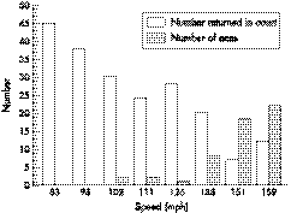
Best Way To Control The Ball With The Racket¶
The player must regulate the pace with which the ball is stroked. Ball speeds put additional pressure on an opponent because they shorten it takes to get at and prepare for the stroke. Ball speed also limits the opponent’s options and complicates the shot’s execution. The disadvantage of ball speed is that the margin for error is narrower, making ball placement more challenging to control. The speed and spin of the ball following a stroke are both tightly and inversely linked.
The more direct the hit between the ball and the racket, the faster the ball leaves the racket, yet the more glancing the collision, the more spin. Putting the right spin on the ball may reduce the margin for error in a stroke and alter the ball’s bounce. All tennis shots, even flat serves and groundstrokes, include some ball spin. However, the higher quantities of spin created by racket trajectory changes at contact have the most dramatic impacts on ball flight and bounce.
The racket’s upward motion causes topspin during impact. The racket path is from low to high through contact for powerful topspin forehands, typically between 40 and 50 degrees upward. Remember that the steeper the racket path, the less the margin of error in contacting the ball and the slower the tempo. Depth is one of the essential shot placement goals.
Strokes along the baseline are considerably more challenging to return, limit the angles an opponent may play, and provide a player with more time to recover for the following stroke. Topspin players must use caution to maintain their depth throughout rallies. Aiming groundstrokes high above the net is one of the most acceptable methods to gain depth of placement.
Under pressure, players who hit the ball flat may choose not to lift shots over the target instead of aiming near the tape, resulting in shots that lack the depth required to prevent their opponents from attacking.
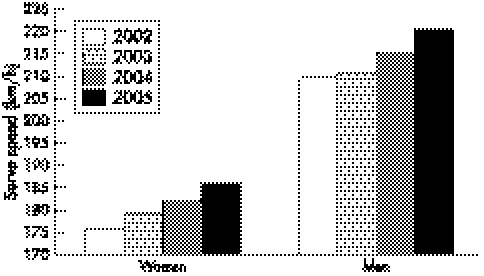

The Physics of Tennis Racket Sweet Spots¶
By Fabio Bocchi (August 27, 2015)
by Fabio Bocchi August 27, 2015 Each year, tennis players from around the world compete at the U.S. Open, one of the oldest and largest tennis tournaments. With the 2015 tournament approaching, I found myself reflecting on my own experiences playing tennis, particularly how the feeling you get after hitting the ball is never quite the same. Is this simply a figment of the imagination or is there a physical answer? As I will explain here, so-called “sweet spots” can account for this feeling.
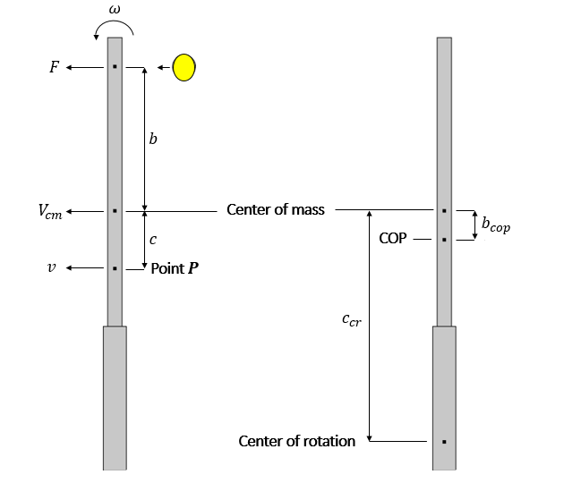
The Vibration Node of a Tennis Racket¶
In mechanical vibration theory, the vibrations nodes are defined as the points that never move when a wave is passing through them. Because of a wave created by the impact of a ball hitting a racket, the racket will, in turn, begin to oscillate and vibrate. The first three mode shapes of a tennis racket, from left to right and top to bottom. The fundamental mode is at 15 Hz, the second mode is at 140 Hz, and the third mode is at 405 Hz.
As illustrated above, many different points feature this behavior. So why am I talking as if there is only one vibration node? In reality, there is actually an infinite number of vibration nodes. Upon impact, the ball generates an infinite number of harmonic series at different frequencies. An infinite number of frequencies are excited at one time, but which vibration node is the “sweet spot”?
Is it the fundamental mode shape vibration node or is it a node that results from the crossing of different harmonics? The fundamental mode vibration node cannot be the sweet spot for an obvious reason: It is located at the grip. Try hitting the ball with the grip to pass it over the net. If you are very lucky, you may succeed, but most likely, you won’t. The second vibration mode, meanwhile, has two nodes: one at the grip and one on the strings near the frame head.
The latter is considered the sweet spot. Any player that hits the ball at this point will feel almost no vibration during impact. There are, of course, vibration nodes on the strings for higher modes, as depicted in the third mode from the simulations above. However, as the natural frequency of the mode increases, the magnitude of the vibration drastically decreases.
The graph below shows the frequency response of a sinusoidal load of 5 ms — approximately the duration of a ball’s impact upon hitting a racket — on a beam-like structure. For frequencies higher than 300 Hz, the magnitude is almost zero. That is, the influence of the third mode or higher is negligible. No matter where the ball strikes, even at points where the magnitude of the mode shape has reached its maximum, the higher modes will not have any influence at all because they are not excited.
A plot showing the frequency response of a sinus load of 5 ms.
A Tennis Racket’s Center of Percussion¶
When the ball hits the tennis racket near one end, with no other force acting on it, the racket will rotate about an axis toward the other end. As the point where the ball strikes the racket becomes closer to the center of mass, the distance from the axis of rotation will decrease. In a case where the ball hits the center of mass, the racket will translate without any rotation. The center of rotation is, from a mathematical point of view, at an infinite distance from the racket.
That said, it is possible to find an impact location that produces a center of rotation near the end of the grip where the player holds the equipment. We can find a location at a certain distance from the center of mass where the ball hits the racket and results in a center of rotation near the end of the grip. Referred to as the center of percussion (COP), this location is sometimes considered a sweet spot as well.
No force is applied to the hands, as the racket rotates about a center of rotation near the end of the grip, avoiding the player’s hands. Compared to older wooden tennis rackets from the 1970s, modern forms of this equipment feature a much larger head. This new design element has been used to move the center of percussion near the middle of the strings rather than by the racket’s frame. Image by CORE-Materials, via Wikimedia Commons.
Let’s now take a quick look at what happens from a mechanical standpoint. For this purpose, we assume that the racket can be modeled as a rigid beam-like structure. Sketch of the beam-like structure. The parameters used in the following equations are defined in this figure. A force applied to a free beam of mass at a distance from the center of mass implies that the center of mass translates at a speed .
From Newton’s second law, Moreover, a torque is generated by the force about the center of mass: where is the beam moment of inertia along the rotation axis and is the angular velocity. Consider , a point at a distance from the center of mass.
The speed of this point is , leading to: Since the center of rotation corresponds to the point where there is no translational acceleration, the COP is at a distance from the center of mass, which is given by where is the distance between the center of rotation and the center of mass. Given that the distance between the center of mass and the ideal center of rotation (at the grip end) is known, it is rather straightforward to determine the position of the COP for a particular racket shape.
The Power Point¶
The power point, sometimes called the third sweet spot, is the best bouncing point. In other words, this is where the ball achieves the most bounce upon contact. From a mathematical standpoint, the power point is defined as the point with the highest coefficient of restitution (COR), the ratio of the rebound height to the incident height of the ball. The coefficient of restitution is quite useful in the sense that it is the result of all of the design elements that affect the speed of the ball.
Design engineers do not need to know the influence of each parameter, as the COR provides a combined overview of all of these factors. The power point is located at the throat of the racket, near the center of mass. The closer the point is to the throat, the greater the stiffness and the lower the energy loss during racket deformation. When a ball hits a racket, the impact energy is divided into kinetic energy and elastic energy (energy of deformation) throughout the ball, racket, and strings.
At the power spot, deformation is very small, causing the racket to give almost all of the kinetic energy back to the ball. The power spot is very useful when returning a fast serve. Indeed, if you must return a fast serve, you do not have much time to move your racket and prepare your stroke, so you will return the ball as it comes. However, it is important to note that the closer the ball comes to the power spot, the better your stroke will be.
The Dead Spot¶
One last interesting spot on the racket that I’d like to mention is the dead spot. When a ball strikes the dead spot, the ball will not bounce at all. All of the ball’s energy is given to the racket and no energy is given back to the ball. This is due to the fact that the effective mass of the racket at the dead spot — usually close to the tip — is equal to the mass of the ball.
Mechanically speaking, the ratio between the resulting force and the acceleration at the dead spot is equal to the mass of the ball. To better understand the physical phenomena at hand, let’s imagine the ideal collision between a rigid ball at an initial speed and another rigid ball, initially at rest, that features the same mass .
The conservation of energy and the conservation of momentum lead to: Therefore, it turns out that: If a ball collides with another ball that is of the same mass but at rest, the ball will stop dead and give all of its energy to the other ball. Thus, when a ball hits the dead spot of a racket at rest, the ball will not bounce at all. This would be a very bad spot to use when trying to return a serve.
On the other hand, when you actively hit a stationary ball, as in your own serve, the dead spot will provide a high momentum transfer of energy from the racket to the ball. Then, when it is your turn to serve, what is the optimal point? This is not only determined by the mathematics of sweet spots. In most cases, the answer would be rather close to the tip. Because of the way you move your arm, the racket will feature a significantly higher speed at the tip than at the throat.
Thus, the optimal point is determined by a combination of high impact speed and good momentum transfer properties.
Game-Set-Match¶
We have now gained insight into the physical meaning behind the three well-known sweet spots of a tennis racket. At the vibration node, the uncomfortable vibration that tennis players feel over their hand and arm is minimal. At the center of percussion, the initial shock to the player’s hand is also minimal. Lastly, at the power point, the ball rebounds with the maximum level of speed. The location of the sweet spots on a tennis racket.
Before You Hit the Court… Perfect your game; check out these additional resources for improving your tennis skills: Tennis Science for Tennis Players, H. Brody. “Physics of the tennis racket“, H. Brody. “Physics of the tennis racket II: The “sweet spot“, H. Brody. “Physics of the tennis racket III: The ball-racket interaction“, H. Brody. Read More About the Science of Sports Simulation provides a deeper understanding of the physics behind a number of other sports.
Browse our Physics of Sports blog posts to learn more.
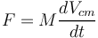
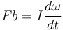
Modern Tennis Rackets, Balls, and Surfaces¶
By Brody, Cross, et al.
Abstract¶
Modern rackets have facilitated a change in playing style from one of technique to one characterised by power and spin. The combination of the increased stiffness of modern rackets and the tendency for tennis balls to have become harder has led to an increased shock transmission from the racket to the player, which is probably a major contributor to tennis elbow.
The paucity of tennis specific research on shoes and surfaces makes it difficult to link their characteristics with lower limb injury, although, as their interaction directly affects the magnitude of the forces to which the player is exposed, such a link seems reasonable. Keywords: tennis, equipment, performance, injury Performance in many sports is influenced to a certain extent by the equipment used.
Tennis is one of those sports, and is unusual in that there are several pieces of equipment that exert such an influence. The key pieces of equipment in question are the racket, ball, surface, and shoe. This paper gives an overview of the performance related issues of tennis equipment. Go to:
Rackets¶
Until the 1970s, tennis rackets were made out of wood—most commonly ash and beech. All had dimensions of 27 × 9 inches (68.6 × 22.9 cm), which were a function of the stress limits of the wood. Modern rackets are composed mainly of graphite, strips of which are wrapped around a racket mould and left to harden.
This has allowed racket engineers to design frames by considering the physics of the swing without being inhibited by the structural limitations of wood.1 This has brought immediate and substantial changes to physical properties and playing characteristics. The most obvious of these was an increase in head size, which was possible because of the greater strength of the new materials.
Rackets of 32 inches in length were being produced (this had previously not been possible with wood, as the stress limits would have been exceeded, leading to warping), so the International Tennis Federation responded by limiting racket size to 29 × 12.5 inches (73.7 × 31.8 cm). Figure 11 shows the relative differences in dimensions between wooden and graphite rackets. Figure 1 Wood and graphite rackets.
A second key change was a decrease in mass, as wood is considerably denser than modern composite materials. Racket mass has decreased from about 400 g to 250 g today, despite being larger (table 11).). It is possible to make a racket lighter still, but this would be counter‐productive, as the transfer of momentum to the ball becomes less effective if the racket is too light.
Table 1 Comparison of average characteristics between wood and composite racquets3 Open in a separate window This decrease in mass has the important spin off that players are able to swing the racquet faster, which generates higher impact speeds, resulting in faster ball speeds. Swing speeds are also a function of the distribution of mass: for any given racket mass, placing more of that mass close to the handle of the racket will allow it to be swung more rapidly.
Conversely, if more of the mass is close to the tip of the racket, it will be harder to swing. It has been shown that a moment of inertia is inversely related to swing speed.2 By being wider, modern rackets have a greater polar moment of inertia (the resistance of the racket to rotation about its long axis), which makes them more accommodating to off centre hits. These changes have undoubtedly helped novice players to be more successful more quickly.
The benefits of modern rackets are not limited to the novice. Although heavier rackets will, all else being equal, produce faster ball speeds, if the racket is lighter, it can be swung faster, which more than makes up for the loss of mass. Given that faster shots are less likely to be returned than slower ones, players tend to hit the ball as hard as possible. Thus rackets of the same mass as wooden ones are no longer made. Despite being lighter, modern rackets are also stiffer than wooden ones.
As a result, they deform less, and so less ball energy is consumed in bending the racket (this does not matter too much if the ball hits near the centre of the strings). Even the stiffest racket will bend to a certain extent, and there is a theoretical relation between stiffness and ball speed. When the ball leaves the string bed, the racket head velocity will affect its speed.
If the racket is moving in the opposite direction to the ball at separation, then ball speed will be lower than that produced if they are moving in the same direction. The ball/racket contact time is about 5–6 milliseconds, which means that a racket needs to vibrate at a frequency of 166–200 Hz for the direction of racket and ball movement to be the same when they separate. Old wooden rackets vibrate at about 90 Hz,3 whereas modern rackets can be made to vibrate at frequencies up to 200 Hz.
It is obvious from watching any professional tennis match that today's game is one based on power. The faster a player can hit the ball, the less likely it is that the opponent will return it. A faster ball will tend to travel further than a slower one, so players have to use a lot of topspin to keep the ball in play (relatively little is known about the mechanisms by which spin is generated).
By virtue of their greater size, topspin is more easily applied on modern rackets, which has arguably contributed to today's playing style being based on power hitting. Power is not constant at all points on the racket face. The physical characteristics described above contribute to the presence of what has become known as the “sweet spot”. Three sweet spots have been described. The node. Here, vibration to the hand is a minimum. Vibration is produced when the ball impacts the racket.
The amount of vibration is dependent on the racket stiffness (stiffer rackets produce lower amplitude and higher frequency) and impact location. A ball striking a racket will elicit vibration, the amplitude of which will be zero at the node. There is a corresponding node in the handle where there will also be no vibration. If a player is holding the racket at the node, then no racket vibration will be felt and the hit will feel “sweet”.
Many players use vibration damping devices to reduce discomfort for off node impacts. Research4 has shown that dampers attached to the strings are effective in damping out string vibration, but have little effect on the racket frame. Centre of percussion. Impacts at this location produce no acceleration of the handle in the hand, and thus no “shock” is transmitted to the player. The centre of percussion is normally slightly closer to the handle than the node.
The maximum coefficient of restitution. This is the location on the strings at which the maximum ball speed is produced. For a stationary racket, the maximum coefficient of restitution is found at the centre of mass, but moves towards the tip when the racket is being swung.5 As such, it is not really a sweet spot.
Because the locations described above are not coincident, the sweet spot is more of a “sweet area”, with power peaking towards the centre of the head and dropping away towards the tip and throat. It does not follow, however, that the maximum ball speed will always result from hitting at the point where power is at its peak. The way that the racquet is swung is also important.
For a groundstroke, the head of the racket is a long way from the axis of rotation, and so there is relatively little difference between the speeds of the throat and tip. For a serve, however, the axis of rotation lies closer to the head, and so there is a relatively large difference in speed between the throat and the tip. Thus hitting the ball close to the tip, where racket speed is highest, more than offsets the loss in power resulting from hitting away from the sweet spot.
Hence top players tend to hit the ball towards the tip of the racket when serving, and nearer the centre of the head for groundstrokes. The importance of racket power has been considered by Haake et al,6 who showed that the number of good returns decreases and the number of aces increases as serve speed increases, especially for serve speeds over 100 mph (fig 22).).
Figure 33 shows that serve speed has tended to increase in recent years, a trend that is due in no small part to modern tennis rackets, and which governing bodies are monitoring closely. Figure 2 Relation between serve speed and number of good returns.6 Figure 3 Average speed of 20 fastest servers at Grand Slam events since 2002. The changes in racket construction make it easy to overlook the contribution of strings to racket performance.
The ball normally does not even touch the frame of the racket; all of the contact is with the strings. There are several variables that influence the performance of strings, the key ones being material, tension, gauge, and roughness. For example, it is generally accepted that lower string tension generates more power, whereas higher tension gives more control.
This is because the majority of energy loss during racket/ball contact is in the ball, which returns up to about 50% of its pre‐impact energy, whereas the strings are much more efficient, being 90–95% energy efficient. When they collide, both the ball and strings deform. If more energy can be stored in the strings, then the collision will be more efficient and more energy will be returned.
By reducing string tension, the string bed deforms more and the ball deforms less, so returning more energy. The reason for higher string tension generating more control is not as well established. Off centre impacts may hold the key.7 The ball has a longer contact time on a racket strung at lower tension, which produces greater twist than one strung at higher tension, which results in a greater error in rebound angle.
It was also noted by Brody7 that the reduced outgoing ball speed in off axis impacts may compound the control problem. Another school of thought is that higher tension reduces the relative movement of strings, producing a more predictable rebound direction. Although modern racket technology has produced many positive effects, it is arguable that injury rates have increased as a result.
Anecdotal evidence suggests that the vast majority of upper limb injuries are chronic, having been developed over time through repetition. Although research evidence has yet to be produced, it is not unreasonable to suggest that the trend for increased power is responsible for the increased number of injuries seen in today's game. There is little evidence of acute injury to tennis players.
For example, increased stiffness of modern rackets means that the racket vibrates faster, which has been proposed to be linked with tennis elbow. Although a larger head size allows off centre hits that are further from the central axis of the racket to be successful, they also generate a higher torque (twisting force) of the racket in the hand. This torque must be resisted by the forearm muscles, which are eccentrically loaded.
This has been proposed as a cause of micro‐trauma to the extensor muscles of the wrist, which is a possible cause of tennis elbow. Go to:
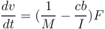
Balls¶
The fundamental construction of a tennis ball has not changed for many years. In essence, a spherical shell—known as the “core”—is formed from two hemispheres and covered with two pieces of cloth. The core is primarily composed of rubber, but will also contain a number of additives to help produce the desired properties. Traditionally, all tennis balls were covered in a woven “melton” cloth, which is a blend of wool and nylon.
Recently, needle cloth has been used as a covering, which is less durable and cheaper to produce. Depending on the type of ball being produced, the internal pressure will typically vary from 0 to 15 psi (0–103 kPa) above atmospheric pressure. Balls derive their playing characteristics from a combination of the core construction, cloth type, and internal pressure.
The Rules of tennis9 require balls to pass four tests (mass, size, compression resistance, and bounce) to become approved, some of which have remained unchanged since their inception. For example, the bounce test, in which a ball must rebound to a height of 53–58 inches (134.6–147.3 cm) when dropped from a height of 100 inches (2.54 m), has been the same since it was introduced in 1925.
By contrast, however, the compression rule has changed over time such that balls are now “harder”—that is, more resistant to compression during impact with a racket or surface. Table 22 shows the allowable range for compression, which measures the deflection under a load of 8.192 kg during a loading/unloading cycle. Table 2 Changes in the specification for ball compression Open in a separate window All values refer to type 2 balls. Several new types of ball have been introduced in recent years.
The pressureless ball has the same performance properties as the standard pressurised ball, but, as its name suggests, its internal pressure is equal to atmospheric pressure. To compensate for the effects of reduced internal pressure on its bounce characteristics, the pressureless ball normally has a thicker core and so derives a greater proportion of its rebound properties from the rubber.
The type 1 ball is identical with the standard ball, except that it is harder—that is, more resistant to compression. According to the Rules of tennis, the type 1 ball is recommended for use on slower surfaces such as clay, where its playing characteristics allow a faster game. The type 3 ball is 6–8% bigger than the type 2 ball but otherwise identical.
The major effect of this difference is that that the type 3 ball generates greater air resistance for a given speed, resulting in a greater deceleration as it flies through the air. Thus the type 3 ball tends to slow the game down, as it takes longer to reach the opponent. This ball is recommended for use on faster surfaces and for people learning the game to give them more time to prepare for shots.
High altitude balls are designed to bounce lower than the type 2 ball, which is achieved by reducing internal pressure, manipulation of the elastic properties of the core itself, or a combination of the two. When tested at sea level, the bounce height of a high altitude ball must be 48–53 inches (121.9–134.6 cm).
The reduced air density at altitude means that the relative difference between the internal and external pressures is increased, and so the bounce of a high altitude ball is comparable to that of a standard ball at sea level. Table 33,, which is reproduced from the Rules of tennis,9 shows a summary of the properties of tennis balls. Table 3 Summary of tennis ball properties Open in a separate window *This ball may be pressurised or pressureless.
The pressureless ball shall have an internal pressure that is no greater than 1 psi (7 kPa) and may be used for high altitude play above 4000 feet (1219 m) above sea level and shall have been acclimatised for 60 days or more at the altitude of the specific tournament. †This ball is also recommended for high altitude play on any court surface type above 4000 feet (1219 m) above sea level. ‡This ball is pressurised and is an additional ball specified for high altitude play above 4000 feet (1219 m) above sea level only. §The deformation shall be the average of a single reading along each of three perpendicular axes.
No two individual readings shall differ by more than 0.030 inches (0.076 cm). The tennis ball goes through three distinct phases during a normal shot: racket/ball impact; trajectory through the air; ball/surface impact (although this does not apply to a volley). Ball/surface impact is followed by a second trajectory, the consideration of which is identical with that before surface impact.
The general characteristics of the impact between a ball and racket were considered in the preceding section, although it was not mentioned that ball impact characteristics are speed dependent. An extensive review10 found that the coefficient of restitution for a type 2 tennis ball on a rigid surface ranged between 0.75 at 7 m/s and 0.40 at 45 m/s (fig 44).). This corresponds to energy returns of 56% (7 m/s) and 16% (45 m/s).
These figures will be somewhat higher for impacts between a ball and racket (in the order of 25% at 45 m/s),3 as some energy is absorbed by the strings, which is returned more efficiently. Nevertheless, the relative inefficiency of a ball compared with tennis strings and surfaces is magnified at higher impact speeds, and players experience diminishing returns for their extra effort. The Rules of tennis only require rebound testing at an impact speed of about 7 m/s.
Figure 4 Relation between coefficient of restitution and impact speed for standard tennis balls.10 It has been noted that modern tennis is characterised by power and spin. These factors are interlinked in that balls hit faster require more spin to keep them in play. This phenomenon, known as the Magnus effect, is generated by the asymmetric separation of the air flowing over each side of the ball as it flies through the air.
The air that passes over the side of the ball that is spinning in the same direction remains in contact with the ball longer than that on the other side, resulting in a deflection of the “wake”. The force applied to the ball by the air acts in the opposite direction to that in which the wake is deflected. Thus a top spinning ball will experience a force acting downwards, which brings the ball back down to the court quicker.
The more spin that is applied, the greater the force generated, and so the faster the ball will return to the surface. Thus balls with more spin can be hit harder and still stay in play. The aerodynamics of tennis balls change as they become worn and more cloth is lost from the surface.
It has been shown that lift and drag forces reduce with wear,11 which means that, for the same initial conditions, worn balls suffer the double whammy of flying quicker through the air and generating less downward force to keep them in play. On impact with the surface, the ball acquires spin, the amount of which is dependent on the friction generated between the ball and surface.
The friction is a function of the materials of which the ball and surface are made, but also the force exerted between them. The variation between surface materials is relatively large, and so it exerts the greatest influence on the nature of the impact. This will be considered in more detail in the next section. It is difficult to ascribe tennis injury to the ball, as professional players use many different brands, often on a weekly basis, so any effects are “washed out” by the variability.
Anecdotal reports, however, suggest that players are sensitive to differences between brands. A method by which “feel” can be quantified has been proposed.12 This involves plotting dynamic stiffness against coefficient of restitution. Those balls with a high stiffness and high coefficient of restitution were characterised as feeling better than those with low stiffness and low coefficient of restitution, although it must be noted that the study made no link with player injury.
Contact time was used as a measure of dynamic stiffness by Haake et al,12 and so stiffer balls were those that had a shorter contact time. It is possible therefore that the balls that feel better are also associated with greater shock transmission to the player. Go to:
Surfaces¶
After the invention of the modern game of tennis in the late 19th century, it was played predominantly on grass for many years, until the introduction of acrylic in the 1940s and clay in the 1950s. These are the most common surfaces on which tennis is played today. Grass and clay are regarded as “natural” surfaces.
The former is composed of seeded turf on a soil base, and the latter is made up of layers of crushed stone of decreasing diameter, topped with a fine gritty material—for example, crushed brick. Acrylic courts use asphalt and/or concrete as a sub‐base, on to which may be laid an optional layer of crumb rubber that acts as a shock pad and reduces the impact forces transmitted to the player. The uppermost (playing) surface is acrylic paint mixed with sand.
The construction of a court is crucial in determining the behaviour of the ball and the movement of the player. Shock absorption and friction are two of the most important properties as far as the player is concerned, but the latter is more relevant for the ball/surface interaction, as surfaces are generally much stiffer than the ball and play little part in its behaviour. The frictional interaction between the ball and surface influences the “pace” of the court.
More friction will generate a greater loss of ball speed during contact, and hence a “slower” court. Lower friction produces the opposite effect. For a grass court, the vertical bounce height can be lower than on other surfaces, especially if the surface is soft because of rain. This reduces the time between the first and second bounce, which players can also perceive as a “fast” surface. With respect to the player, things are somewhat different.
Although the clay surface has the highest frictional coefficient with the ball, it has the lowest frictional coefficient with the player. This is because the gritty surface material acts like ball bearings, which results in players often sliding across the court, such as while decelerating and changing direction. On an acrylic court, the ball experiences less friction compared with clay, but the opposite is true for the player.
Much more friction is generated between the tennis shoe and acrylic surface than a clay court, and so there is little sliding on acrylics. Thus it may be deduced that the forces experienced by the player during high intensity movements such as decelerating and changing direction are greater on the surfaces that have higher friction. More research is needed in this area to establish this theory.
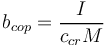
What is already known on this topic¶
The physical characteristics of modern tennis rackets is well known, including the nature of ball/racket impact and the effects of the physical properties of modern rackets on swing characteristics Tennis ball characteristics have also been measured, including the effects of surface friction on ball/surface interaction In terms of resilience, acrylic surfaces are generally the stiffest court surface type, with most having a peak force reduction of less than 10% compared with a completely rigid surface—for example, concrete—while the figures for clay and grass are somewhat higher (in the order of 15% and 25% respectively).
Compared with athletics tracks, which commonly have a force reduction in the order of 50%, tennis courts are not particularly resilient.
Although there is little tennis specific evidence linking surface stiffness with lower limb injury, there is some evidence that human muscles are sensitive to the stiffness of surfaces, and that frequent exposure to changes in stiffness may be linked to lower limb injury—for example, if they necessitate a change in technique.13,14 If true, this could have considerable implications for tennis, as tennis is unusual in that players experience a wide range of stiffness during a season, as well as frequent changes in stiffness associated with playing at different events.
Although the court surface will undoubtedly affect the loads imposed on the player, the shoes will also be influential, as they act as the “middle link” between them. There is limited tennis specific research on the interaction between shoes and surfaces, but unpublished work by the International Tennis Federation suggests that the shoe plays a significant role in determining the vertical (impact) forces transmitted to the body.
The area in which the greatest amount of research has been carried out on sports footwear is running, but one must regard the conclusions with some caution, as running generates different movement patterns, speeds, and therefore forces on the human body from tennis. Thus the findings must be applied to tennis with caution. Nonetheless, some key conclusions from the running related literature will be briefly considered here.
Despite the relatively recent development of running shoes as impact attenuators and injury protectors, little or no evidence of running related injuries in normally unshod populations has been found, whereas injuries in shod populations remain high.15 It has been agreed that modern footwear can enhance injury propensity.16 According to Misevich and Cavanagh,17 the basic problem (in running) is the repetitive impact, the accumulation of which causes overuse injuries such as stress fractures.
If the magnitude of these impact forces is positively related to the rate of development of overuse injuries, as has been proposed by Nigg,13 then it may be concluded that non‐compliant shoes and surfaces have a causal link to injury. However, there are alternative potential contributory factors, such as high impact forces while decelerating, which prevents use of the plantar flexor muscles as shock absorbers.
As tennis includes a lot of changes in direction, this is a possible injury causing mechanism.
What this study adds¶
This paper reviews the current state of knowledge of the history and mechanical characteristics of tennis rackets, balls, and surfaces, and their respective interactions Critically, this review also links what is known about the physical characteristics of tennis equipment to common tennis injuries The ability of the shoe to generate adequate friction is also crucial, as it allows the player to move around the court effectively and safely.
Insufficient friction will mean that the player will tend to slip and fall over, whereas too much friction may increase the risk of injury. No work is known that quantifies the friction generating capabilities of tennis shoes and the relative effectiveness of surface specific and multipurpose footwear in generating friction.
Probably the most complete consideration of common tennis injuries—including the lower limb—can be found in the book by Pluim and Safran,18 but it too contains little empirical evidence pertaining to the relation between shoes, surfaces, and injury. It is clear that further tennis specific work is required before firm conclusions can be drawn and recommendations made to reduce the frequency of injury. Go to:
Footnotes¶
Competing interests: none declared Go to:
References¶
1. Brody H. An overview of racket technology. In: Haake S, Coe A, eds. Tennis science and technology. London: International Tennis Federation, 200043–48. 2. Mitchell S R, Jones R, King M. Head speed vs. racquet inertia in the tennis serve. Sports Engineering 2000399–110. [Google Scholar] 3. Miller S, Cross R. Equipment and advanced performance. In: Elliott B, Reid M, Crespo M, eds. Biomechanics of advanced tennis. Roehampton: The International Tennis Federation, 2003179–200. 4. Brody H.
Vibration damping in tennis rackets. International Journal of Sports Biomechanics 19895451 [Google Scholar] 5. Brody H. The physics of tennis. III. The ball racket interaction. Am J Phys 199765981–987. [Google Scholar] 6. Haake S J, Rose P, Kotze J. In: Haake SJ, Coe A, eds. Tennis science and technology. Oxford: Blackwell Science, 2000269–276. 7. Brody H. Overview of strings. In: Brody H, Cross R, Lindsey C, eds. The physics and technology of tennis.
Solana Beach, CA: Racquet Tech Publishing, 2002239–249. 8. Knudson D. Biomechanical research into tennis elbow. Proceedings of ISEA. ISEA 2004 9. International Tennis Federation Rules of tennis 2005. Roehampton: International Tennis Federation, 2005 10. Miller S, Messner S. On the dynamic coefficient of restitution of tennis balls. In: Miller S, ed. Tennis science and technology 2. Toronto: Webcom, 200397–104. 11. Goodwill S R, Chin S B, Haake S J.
Wind tunnel testing of spinning and non‐spinning tennis balls. J Wind Eng Ind Aero 200492935–958. [Google Scholar] 12. Haake S J, Carre M J, Goodwill S R. The dynamic impact characteristics of tennis balls with tennis rackets. J Sport Sci . 2003;21839–850. [PubMed] 13. Nigg B M. Biomechanical aspects of running. In: Nigg BM, ed. Biomechanics of running shoes. Champaign, IL: Human Kinetics, 19861–26. 14. Nigg B. Impact forces and movement control: two new paradigms. In: Lamontagne M, ed.
ISBS XXII Proceedings. Ottawa: University of Ottawa, 2004 15. Robbins S E, Hanna A M. Running‐related injury prevention through barefoot adaptations. Med Sci Sport Exerc 198719148–156. [PubMed] [Google Scholar] 16. Cavanagh P R. Current approaches, problems, and future directions in shoe evaluation techniques. In: Winter DA, Norman RW, Wells RP, et al, eds. Biomechanics IX‐B. Champaign, IL: Human Kinetics, 1985123–127. 17. Misevich K W, Cavanagh P R.
Material aspects of modelling shoe/foot interaction. In Frederick EC, ed. Sports shoes and playing surfaces. Champaign, IL: Human Kinetics, 198447–75. 18. Pluim B, Safran M.From breakpoint to advantage: a practical guide to optimal tennis health and performance. Solana Beach, CA: USRSA, 2004
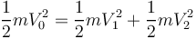
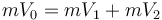
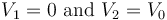
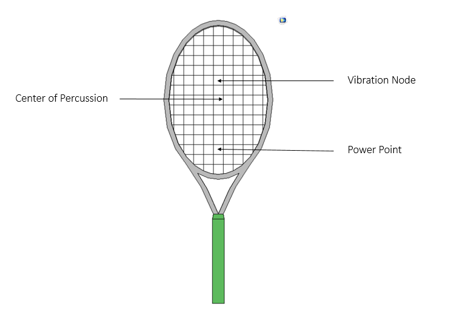

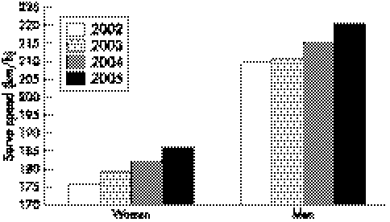
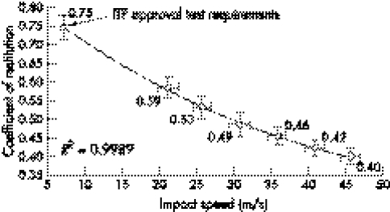
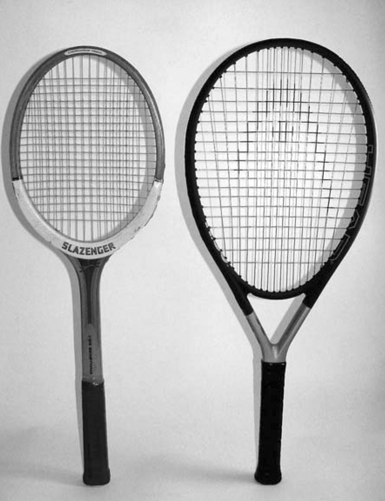